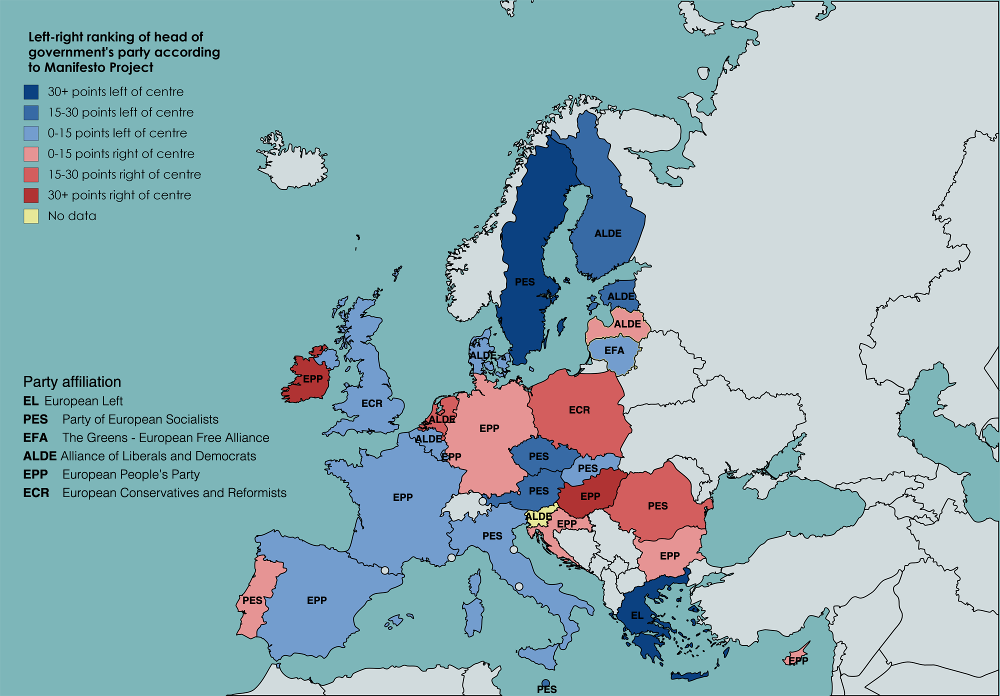

Einführung in R und Quarto
Pivoting & Joining
Reshaping

Source: Garrick Aden-Buie’s (@grrrck) Tidy Animated Verbs modified by Mara Averick (@dataandme).
Source: Garrick Aden-Buie’s (@grrrck) Tidy Animated Verbs modified by Mara Averick (@dataandme).
Relational data
If you work with multiple data frames, you work with relational data — if the different data frames are somehow related, that is, if they have some variable(s) in common.

Public opinion and party manifesto data



Join/merge
four different types

Source: Tidy Animated Verbs

Source: Tidy Animated Verbs
Join/merge
four different types

Source: Tidy Animated Verbs

Source: Tidy Animated Verbs
One-to-many joins
So far, our primary and foreign keys identified only one observation in each data frame. But you can also join one to many or many to one. An example is to join the average multiculturalist orientation of parties in one country to each ESS respondent in that country.

Source: Tidy Animated Verbs
Many-to-many joins
Be careful!
If neither the primary nor the foreign key are unique in their data frames, join probably does something that you do not want! It will return all possible combinations, and thereby inflate the number of observations.